程式設計師延壽指南


1. 術語
- ACM: All-Cause Mortality / 全因死亡率
2. 目標
- 穩健的活得更久
- 花更少時間工作：見MetaGPT
3. 關鍵結果
- 降低66.67%全因死亡率
- 增加~20年預期壽命
維持多巴胺於中軸
4. 分析
- 主要參考：對ACM的學術文獻相對較多，可以作為主要參考
- 增加壽命與ACM關係非線性：顯然增加壽命與ACM關係是非線性函數，這裡假設
ΔLifeSpan=(1/(1+ΔACM)-1)*10（ΔACM為ACM變化值；公式歡迎優化） - 變數無法簡單疊加：顯然各個變數之間並不符合獨立同分布假設，變數之間的實際影響也並不明確
- 存在矛盾觀點：所有的證據都有文獻/研究對應，但注意到：有些文獻之間有顯著矛盾的觀點（如對於碳水攝入比例的矛盾）；有些文獻存在較大爭議（如認為22點前睡覺會提升43%全因死亡率）
- 研究僅表達相關：所有文獻表明的更多是相關而非因果，在閱讀時要考慮文獻是否充分證明瞭因果 —— 如某文獻表明了日均>=7000步的人有顯著低的全因死亡率。但步數少的人可能包含更多長期病患，如果沒有合理的排除這塊數據，那此文獻調查失真
5. 行動
- 輸入
- 固體：吃白肉（-11%~-3% ACM）、蔬果為主（-26%~-17% ACM），多吃辣（-23% ACM），多吃堅果（-27%~-4% ACM），中量碳水、多吃植物蛋白（-10% ACM），少吃超加工食物（-62%~-18%）
- 液體：喝咖啡（-22%~-12% ACM），喝牛奶（-17%~-10% ACM），喝茶（-15%~-8% ACM），少喝或不喝甜味飲料（否則每天一杯+7% ACM，+多巴胺），戒酒（否則+~50% ACM，無上限）
- 氣體：不吸菸（否則+~50% ACM，-12~-11年壽命）
- 光照：曬太陽（-~40% ACM）
- 藥物：二甲雙胍（糖尿病人相比正常人可以+3年）、複合維生素（-8%癌症風險）、亞精胺（-60%~-30% ACM）、葡萄糖胺（-39% ACM）
- 輸出
- 運動：每週3次45分鐘揮拍運動（-47% ACM）
- 日常：刷牙（-25% ACM）
- 睡眠：每天睡7小時全因死亡率最低；且22-24點間最好，早睡+43% ACM，晚睡+15% ACM（存在爭議）
- 上下文
- 體重：減肥（-54% ACM）
6. 證據
6.1. 輸入
6.1.1. 固體
- 白肉
- JAMA子刊：食用紅肉和加工肉類會增加心臟病和死亡風險！魚肉和家禽肉則不會
- 出處：Associations of Processed Meat, Unprocessed Red Meat, Poultry, or Fish Intake With Incident Cardiovascular Disease and All-Cause Mortality
- 增加紅肉攝入與死亡風險相關。八年內平均每天增加至少半份紅肉攝入（半份紅肉相當於14g加工紅肉或40g非加工紅肉）的調查對象，在接下來八年內全因死亡風險增加10％（HR, 1.10; 95%CI, 1.04-1.17）；每週吃兩份紅肉或加工肉類（但不包括家禽或魚類）會使全因死亡風險增加3%
- 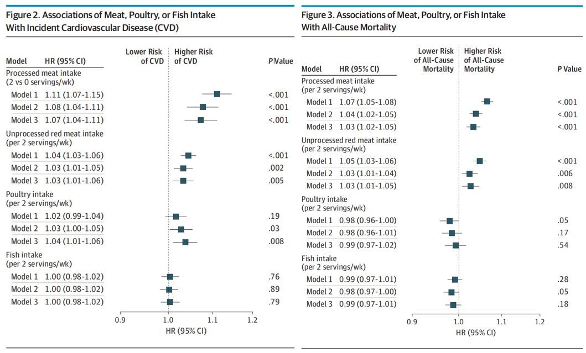
- 紅肉和白肉最大的區別是什麼？為啥要這麼分呢？
- JAMA子刊：食用紅肉和加工肉類會增加心臟病和死亡風險！魚肉和家禽肉則不會
- 蔬果
- 每年54萬人死亡，竟是因為水果吃得少！？這已成十大死亡因素之一！
- 出處：Estimated Global, Regional, and National Cardiovascular Disease Burdens Related to Fruit and Vegetable Consumption: An Analysis from the Global Dietary Database (FS01-01-19)
- 每天攝入200克新鮮水果可使死亡率降低17%，糖尿病大血管併發症（如中風、缺血性心臟病等）風險降低13%，及糖尿病小血管併發症（如糖尿病腎病、糖尿病眼病、糖尿病足病等）風險降低28%
- 《自然》子刊：每天二兩西蘭花，健康長壽都有啦！分析近6萬人23年的數據發現，吃含黃酮類食物與死亡風險降低20%相關丨臨床大發現
- 出處：Flavonoid intake is associated with lower mortality in the Danish Diet Cancer and Health Cohort
- 吃含黃酮類食物與死亡風險降低20%相關
- 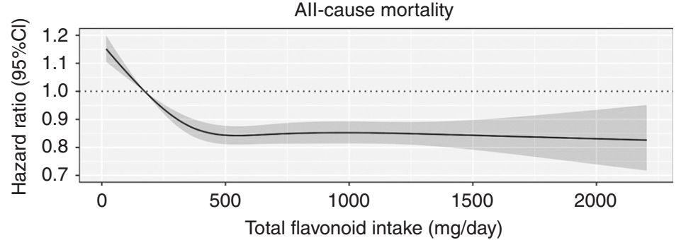
- Bondonno博士說道"吃不同蔬菜、水果補充，不同種類的黃酮類化合物是很重要的，這很容易通過飲食實現：一杯茶、一個蘋果、一個橘子、100克藍莓，或100克西蘭花，就能提供各種黃酮類化合物，並且總含量超過500毫克。
- 每年54萬人死亡，竟是因為水果吃得少！？這已成十大死亡因素之一！
- 辣椒
- 辣椒成死亡剋星？據調研，常吃辣患病死亡風險可降低61%
- 出處1：Chili pepper consumption and mortality in Italian adults
- 出處2：The Association of Hot Red Chili Pepper Consumption and Mortality: A Large Population-Based Cohort Study
- 2017年Plos One 的另一項來自美國的研究以16179名，年齡在18歲以上的人群為對象，並對其進行了高達19年的隨訪，發現在4946例死亡患者中，食用辣椒的參與者的全因死亡率為21.6％，而未食用辣椒的參與者的全因死亡率為33.6％。相較於不吃辣或很少吃（少於每週兩次）的人群，每週吃辣＞4次的人群總死亡風險降低23%，心血管死亡風險降低34%。
- 辣椒成死亡剋星？據調研，常吃辣患病死亡風險可降低61%
- 雞蛋
- 每天多吃半個蛋，增加7%的全因和心血管死亡風險？
- 出處：NIH-AARP工作主頁、Egg and cholesterol consumption and mortality from cardiovascular and different causes in the United States: A population-based cohort study
- 每天多吃半個蛋，增加7%的全因和心血管死亡風險？在假設性替代分析中，研究者發現，用等量的蛋清/雞蛋替代物、家禽、魚、乳製品、堅果和豆類分別替代半隻全蛋（25克/天）可以降低6%、8%、9%、7%、13%和10%的全因死亡率。

- 每天多吃半個蛋，增加7%的全因和心血管死亡風險？
- 堅果
- 哈佛20年研究：吃核桃的人更長壽，顯著減少全因死亡，延長壽命
- 出處：Association of Walnut Consumption with Total and Cause-Specific Mortality and Life Expectancy in US Adults
- 通過分析發現，經常食用核桃可以延長壽命，降低心血管疾病死亡風險。比起不吃核桃，每週食用核桃5份以上（1份28克）的健康預期壽命延長1.3歲，全因死亡風險降低14%，心血管疾病死亡率降低25%。
- 研究：每日食生堅果，死亡率降20%
- 出處1：Association of nut consumption with total and cause-specific mortality
- 出處2：APG_Health-&-Nutrition-Research-Brochure_DEC-19-18
- 研究人員發現，每週吃樹堅果低於1盎司份量的人，死亡率降低7％。而每週吃了1盎司份量的人，減少11％的死亡率；每週吃2份量的人，減低13％；每週5至6份量者，減少了15％；一週7份以上的人，死亡率則減少20％。
- 另外兩篇發表在《公共科學圖書館線上期刊》(Public Library of Science Online Journal)和《生物醫學中心》(BioMed Central)上的醫學預科研究論文，展示了試驗開始時的橫斷面數據。這兩項研究都評估了7,216名對象，以及他們食用堅果的頻率和數量之間的關係。那些每週食用三份以上堅果(包括開心果)的研究對象的死亡率降低39%。
- 哈佛20年研究：吃核桃的人更長壽，顯著減少全因死亡，延長壽命
- 鈉（存有大量爭議）
- Eur Heart J：鈉攝入量與預期壽命、全因死亡率的關係
- 出處：Messerli F H, Hofstetter L, Syrogiannouli L, et al. Sodium intake, life expectancy, and all-cause mortality[J]. European heart journal, 2021, 42(21): 2103-2112.
- 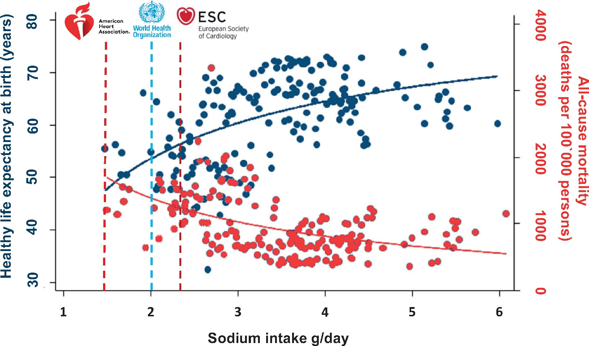
- 在該分析所包含的181個國家中，研究人員發現鈉攝入量與出生時的健康預期壽命（β=2.6年/克每日鈉攝入量，R2=0.66，P<0.001）和60歲時的健康預期壽命（β=0.3年/克每日鈉攝入量，R2=0.60，P=0.048）之間存在正相關關係，但與非傳染性疾病死亡（β=17次事件/克每日鈉攝入量，R2=0.43，P=0.100）無關。相反，全因死亡率與鈉攝入量成負相關（β=−131次事件/克每日鈉攝入量，R2=0.60，P<0.001）。在僅限於46個收入最高國家的敏感性分析中，鈉攝入量與出生時的健康預期壽命呈正相關（β=3.4年/克每日鈉攝入量，R2=0.53，P<0.001），而與全因死亡率（β=−168次事件/克每日鈉攝入量，R2=0.50，P<0.001）呈負相關。
- 該（大範圍）研究認為更多的鈉攝入與顯著更低的全因死亡率有關
- 針對該論文的延伸解讀和討論：A Fresh Foray in the Salt Wars: Life Expectancy Higher With Greater Sodium Intake
- NEJM/Lancet：不要吃太多鹽，中國飲食所致心血管病和癌症死亡全球第一，吃低鈉鹽可降低全因死亡率
- 但也有多項研究認為用低鈉鹽可以降低一系列疾病的發生概率，對全因死亡率的減少有積極影響
- Eur Heart J：鈉攝入量與預期壽命、全因死亡率的關係
- 碳水（存有大量爭議）
- 低碳生酮飲食（四）碳水化合物與長期死亡率
- 出處：The Lancet Public Health - Dietary carbohydrate intake and mortality: a prospective cohort study and meta-analysis
- 碳水越低，壽命越短；碳水越高，壽命也輕微縮短；碳水50%左右（其實按照一般的說法，這也算高碳水）是最長壽命區間
- 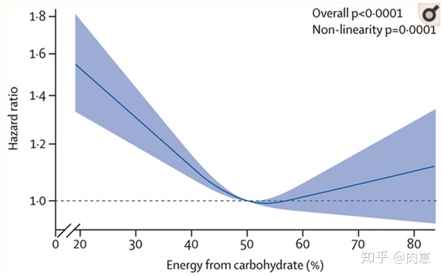
- 最強營養搭配！BMJ：這麼吃，心血管疾病和死亡風險更低
- 低碳生酮飲食（四）碳水化合物與長期死亡率
- 檳榔
- 如何看待檳榔嚼出來的癌症？檳榔致癌風險究竟有多大？ - 丁香醫生的回答 - 知乎
- 出處：Chewing Betel Quid and the Risk of Metabolic Disease, Cardiovascular Disease, and All-Cause Mortality: A Meta-Analysis(https://journals.plos.org/plosone/article?id=10.1371/journal.pone.0070679)
- 嚼檳榔會增加21%的全因死亡率
- 如何看待檳榔嚼出來的癌症？檳榔致癌風險究竟有多大？ - 丁香醫生的回答 - 知乎
- 熱量限制
- 怎麼看待BBC《進食、斷食與長壽》？
- 限制卡路里動物實驗：CR（熱量限制，即少吃）延遲了恆河猴的多種疾病發病和死亡率，與CR動物相比，正常餵養的猴子的各種疾病患病風險增加2.9倍，死亡風險增加3.0倍。
- 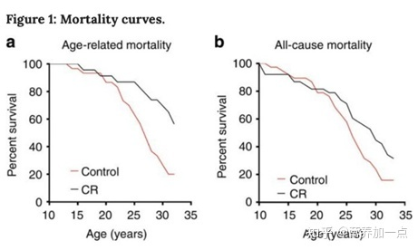
- 怎麼看待BBC《進食、斷食與長壽》？
- 綜合
- 最強營養搭配！BMJ：這麼吃，心血管疾病和死亡風險更低
- Associations of fat and carbohydrate intake with cardiovascular disease and mortality: prospective cohort study of UK Biobank participants
- 通過對這些參與者的數據進行分析，研究人員發現碳水化合物（糖、澱粉和纖維）和蛋白質的攝入與全因死亡率呈非線性關係，而脂肪則與全因死亡率呈線性相關。其中，較高的糖分攝入與全因死亡風險和患心血管疾病的風險較高均有關聯，而較高的飽和脂肪酸攝入與全因死亡風險較高有關。
- 圖1：各種營養元素與全因死亡之間的關係
- 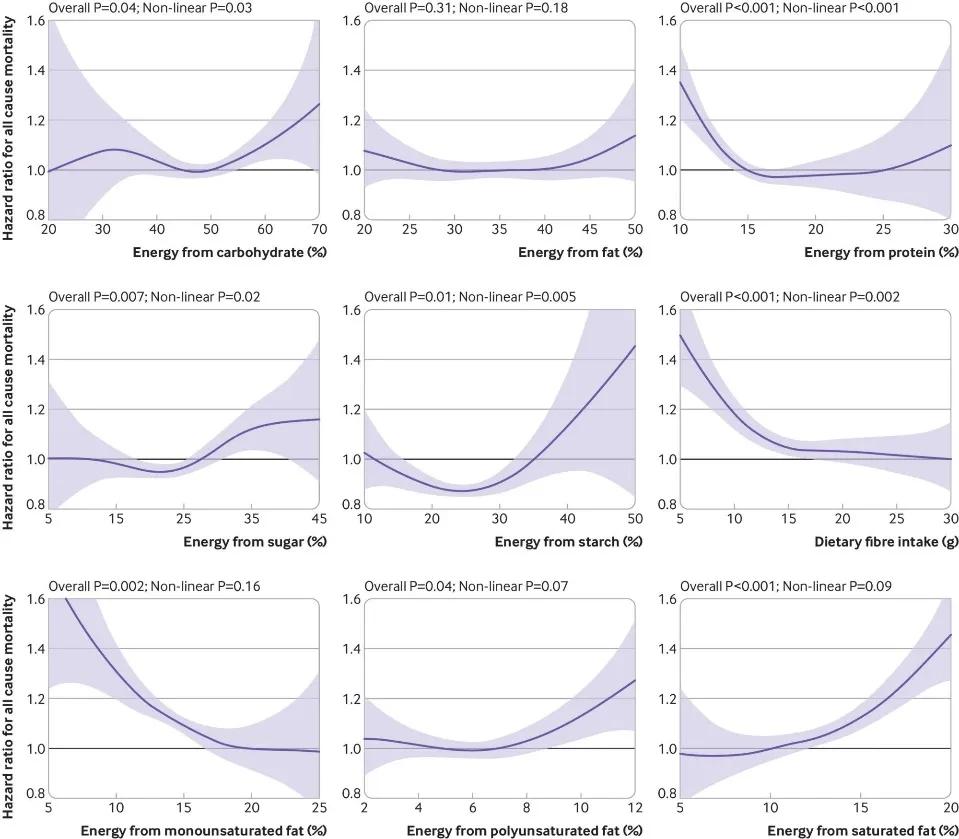
- 圖2：各種營養元素與心血管疾病之間的關係
- 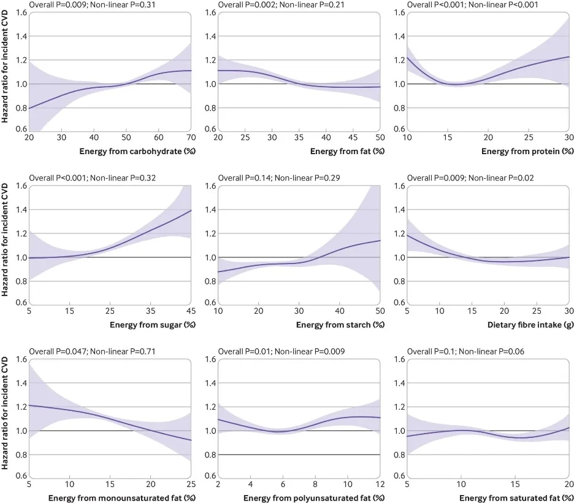
- 進一步研究表明，在所有的飲食模式中，全因死亡率風險最低的飲食方式為：10-30g高纖維、14-30%蛋白質、10-25%單不飽和脂肪酸、5%-7%多不飽和脂肪酸以及20%-30%澱粉攝入。
- 最優能量來源配比：<24%澱粉，15%-17%蛋白質，>15%單不飽和脂肪酸，<15%糖，6%飽和脂肪酸，6%多不飽和脂肪酸，30g+高纖維
- BMJ | 常吃薯片漢堡巧克力等食品，平均死亡年齡僅僅為58歲，死亡風險劇增
- Rico-Campà A, Martínez-González M A, Alvarez-Alvarez I, et al. Association between consumption of ultra-processed foods and all cause mortality: SUN prospective cohort study[J]. bmj, 2019, 365.
- Srour B, Fezeu L K, Kesse-Guyot E, et al. Ultra-processed food intake and risk of cardiovascular disease: prospective cohort study (NutriNet-Santé)[J]. bmj, 2019, 365.
- Lawrence M A, Baker P I. Ultra-processed food and adverse health outcomes[J]. bmj, 2019, 365.
6.1.2. 液體
- 牛奶
- 《柳葉刀》調研21個國家13萬人：每天1斤牛奶或優格，心血管死亡風險下降23%
- 出處：Association of dairy intake with cardiovascular disease and mortality in 21 countries from five continents (PURE): a prospective cohort study
- 與不食用乳製品的人相比，每天攝入兩份乳製品（一份指244克牛奶/優格，15克奶酪或5克黃油）的人，全因死亡風險下降了17%，心血管死亡風險下降23%，中風風險下降33%
- 茶
- 10萬中國人隨訪7年發現，每週喝三次茶與全因死亡風險降低15%，預期壽命增加1.26年相關
- 出處：Tea consumption and the risk of atherosclerotic cardiovascular disease and all-cause mortality: The China-PAR project
- 中國成年人飲茶與死亡風險的前瞻性關聯研究
- 納入分析的438 443例研究對象隨訪11.1年共發生死亡34 661例。與從不飲茶者相比，當前非每日飲茶者和每日飲茶者全因死亡HR值（95%CI）依次為0.89（0.86-0.91）和0.92（0.88-0.95）。分性別分析顯示，飲茶對全因死亡風險的保護作用主要見於男性（交互P<0.05）
- 無糖（甜味）飲料
- 「無糖飲料使死亡風險增加 26 %」，是真的嗎？
- 相比於軟飲料攝入量＜1杯/月的參與者，混合軟飲料攝入≥1杯/天的參與者死亡風險增加18%，而攝入含糖軟飲料或無糖軟飲料會令死亡風險分別增加11%和27%。
- 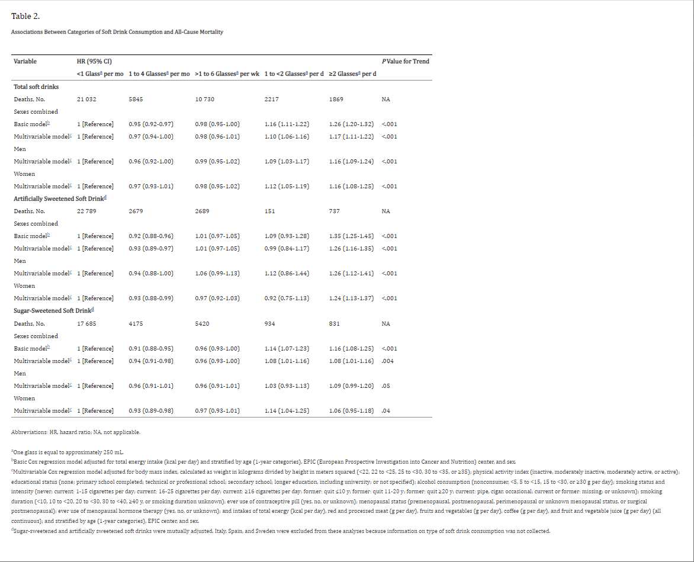
- Association Between Soft Drink Consumption and Mortality in 10 European Countries
- 「無糖飲料使死亡風險增加 26 %」，是真的嗎？
- 有糖飲料
- 可樂和奶茶，增加全因死亡率高達62%！果汁降低免疫力，影響肝代謝！含糖飲料那些事
- 每天1杯含糖飲料增加7%全因死亡率，2杯21%
- 在34年的隨訪中，研究人員發現，相比那些一個月喝1杯或者更少含糖飲料的人，每天喝2杯的人總體死亡風險升高了21%，心血管疾病死亡風險升高了31%，癌症死亡風險上升了16%。
- 只要每天多喝一杯含糖飲料，總體死亡風險將增加7%，心血管疾病的風險將增加10%，癌症相關的死亡風險將16%。
- 發表在國際頂級期刊《BMJ》上的一篇論文就證明瞭含糖飲料會在增加患癌風險，當然這篇文章驗證的不僅僅是果汁，奶茶也有份——和含糖飲料相關的總體患癌風險要高出通常值18%，100%的鮮榨果汁也會使得整體的患癌風險上升12%。
- 可樂和奶茶，增加全因死亡率高達62%！果汁降低免疫力，影響肝代謝！含糖飲料那些事
- 果汁
- JAMA子刊：100%純果汁可能比含糖飲料更危險
- 每天多攝入一份12盎司的含糖飲料，全因死亡率風險增加11%；
- 每天多攝入一份12盎司的果汁，全因死亡率風險增加24%。
- JAMA子刊：100%純果汁可能比含糖飲料更危險
- 咖啡
- 重磅！多篇研究證實喝咖啡與人群全因死亡率降低直接相關
- 科普 | 喝咖啡又多了一個新理由：降低死亡率！
- 地中海成年人咖啡消耗量及全因，心血管疾病和癌症的死亡率
- 在最近的薈萃分析中，該研究包括來自不同國家的40項研究和3,852,651名受試者。在這項薈萃分析顯示，咖啡攝入量與各種原因的死亡率，CVD和癌症死亡率之間存在非線性關係，每天攝入兩杯咖啡的癌症死亡率最低(RR = 0.96)，CVD最低的死亡率，每天2.5杯(RR= 0.83)，全天最低死亡率為每天3.5杯(RR= 0.85)，並且隨著咖啡消費量的增加，死亡率沒有進一步降低或增加
- 亞精胺
6.1.3. 氣體
- 吸菸
- 即使是低強度吸菸，也增加死亡風險！
- 研究發現：在42 416名男性和86 735名女性（年齡在35-89歲之間，以前沒有患病）中，18 985名男性（45%）和18 072名女性（21%）目前吸菸，其中33%的男性吸菸者和39%的女性吸菸者並不每天吸菸。8866名男性（21%）和53 912名女性（62%）從不吸菸。在隨訪期間，與從不吸菸相比，每天<10支菸或每天≥10支菸的全因死亡率危險比分別為1.17（95%置信區間1.10-1.25）和1.54（1.42-1.67）。無論年齡或性別，危險比相似。與每日吸菸關係最密切的疾病是呼吸道癌症、慢性阻塞性肺病和胃腸道及血管疾病。在招募時已經戒菸的人的死亡率低於現在每天吸菸者。
- 吸菸者平均減少壽命11-12年
- 吸菸讓人過癮是什麼原理？有節制的吸菸依舊有害嗎？
- 即使是低強度吸菸，也增加死亡風險！
6.1.4. 光照
- 曬太陽
- 曬太陽和死亡率的關係，如何科學，安全的曬太陽？
- 丹麥一項長達26年的研究發現，多曬太陽能顯著延長壽命，即使是由於過度暴曬誘發皮膚癌的患者，平均壽命也比普通人長了6歲。
- 曬太陽和死亡率的關係，如何科學，安全的曬太陽？
6.1.5. 藥物
- NMN
- 二甲雙胍
- "胍"吹必看 丨我就是神藥——二甲雙胍
- 二甲雙胍不僅在多種腫瘤、心血管疾病及糖尿病中發揮保護作用，而且在肥胖、肝病、腎病及衰老方面也大放異彩。
- 二甲雙胍2020最值得了解的"吃瓜"大新聞——護胃、健腦、抗衰、防癌還是致癌？
- 二甲雙胍真的那麼神嗎？美研究：父親服用二甲雙胍或致子女有缺陷
- 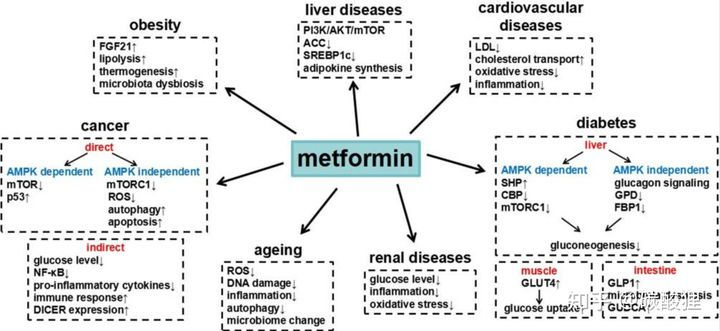
- 不良反應
- 作為一種使用近百年的藥物，二甲雙胍的不良反應已經非常明確，常見的有：維生素B12缺乏（7%-17.4%），胃腸道不良反應（最高53%），疲倦（9%），頭痛（6%）；嚴重但不常見的不良反應包括乳酸酸中毒、肝損傷；也有研究表明可能對胎兒致畸
- "胍"吹必看 丨我就是神藥——二甲雙胍
- 複合維生素
- 葡萄糖胺
- 神奇！氨糖降低心血管死亡率65%，與定期運動效果相當
- 美國西弗吉尼亞大學最新研究發現 氨糖（軟骨素） 可以降低心血管死亡率65%，降低總體死亡率39%，效果與堅持定期運動相對
- 該研究使用1999年至2010年，16,686名成年人的國家健康和營養檢查(NHANES)數據，參與者的中位追蹤時間為107個月，而其中有648位參與者定期且每服用日500-1000毫克的葡萄糖胺/軟骨素一年以上。
- 亞精胺
- Science：科學背書！從精液中發現的亞精胺，竟然有著抗衰老、抗癌、保護心血管和神經、改善肥胖和2型糖尿病等逆天神效
- 亞精胺是最容易從人體腸道吸收的多胺。許多的食物中都含有大量的亞精胺，例如新鮮的青椒、小麥胚芽、花椰菜、西蘭花、蘑菇和各種奶酪，尤其在納豆等大豆製品、香菇和榴槤中含量更高。在本實驗中，研究人員選擇了829位年齡在45-84歲之間的參與者進行了為期20年的隨訪，分析了飲食中亞精胺攝入量與人類死亡率之間的潛在關聯。
- 研究發現，女性的亞精胺攝入量高於男性，並且攝入量都會隨著年齡的增長而下降。亞精胺的主要來源是全穀物（佔13.4%）、蘋果和梨（佔13.3%）、沙拉（佔9.8%）、芽菜（佔7.3%）和馬鈴薯（佔6.4%）。研究根據亞精胺攝入量將人群分為三組，低攝入量組（<62.2 µmol / d）、中攝入量組（62.2–79.8 µmol / d）和高攝入量組（> 79.8 µmol / d）。隨訪期間共記錄了341例死亡，其中血管疾病137例，癌症94例，其他原因110例。經計算低中高三組的粗略死亡率分別為40.5%、23.7%和15.1%，這些數據表明亞精胺攝入量與全因死亡率之間的負相關關係顯著。隨著逐步對年齡、性別和熱量的比例進行調整，這種相關關係依然顯著。
- 綜合
6.2. 輸出
6.2.1. 揮拍運動
- 哪種運動性價比最高？權威醫學雜誌"柳葉刀"給出答案了
- 一週三次，每次45-60分鐘，揮拍運動，降低~47%全因死亡率
- 羽毛球、乒乓球、網球等都算揮拍運動，但由於西化研究背景，可能指網球更多。這隱式的表達了全身鍛鍊更為重要
6.2.2. 劇烈運動
- 新研究：每天劇烈運動8分鐘，可降低全因死亡和心臟病風險
- 每週15-20分鐘的劇烈運動，降低16-40%的全因死亡率，劇烈運動時間達到50-57分鐘/週，可以進一步降低全因死亡率。這些發現表明，通過在一週的短時間內累積相對少量的劇烈運動可以降低健康風險。
6.2.3. 走路
- 走路降低全因死亡率超過50%！每天走多少步最合適？《JAMA》子刊超10年研究告訴你答案
- 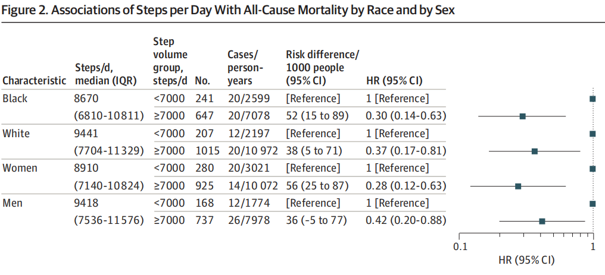
- 註1：這項研究參與者的平均年齡為45.2歲
- 註2：平均步數的多少與職業有關，此項研究僅表明相關性，還沒有更深度的因果分析
6.2.4. 刷牙
- 50萬國人研究證實：不好好刷牙，致癌！血管疾病也會增多！
- 經常不刷牙的人：癌症、慢性阻塞性肺病及肝硬化風險分別增加了9%、12%和25%，過早死亡風險增加25%。
6.2.5. 泡澡
- 定期洗澡降低心血管疾病發作風險
- 與每週一至兩次泡澡或根本不泡澡相比，每天洗熱水澡可以降低28%的心血管疾病總風險，降低26%的中風總風險，腦出血風險下降46%。而浴缸浴的頻率與心源性猝死的風險增加無關。
6.2.6. 做家務（老年男性）
- Housework Reduces All-Cause and Cancer Mortality in Chinese Men
- 72歲之後男性每週做重型家務可以減少29%平均死亡率
- 重型家務：吸塵、擦地板、拖地、擦洗窗戶、洗車、搬動傢俱、搬煤氣罐等等。
- 輕型家務：撣灰塵、洗碗、手洗衣服、熨燙、晾衣服、做飯、買日用品等等。
6.2.7. 睡眠
- 超30萬亞洲人數據：每天睡幾個小時最有益長壽？
- 在男性中，與睡眠時長為7小時相比：睡眠持續時間≥10小時與全因死亡風險增加34%相關；
- 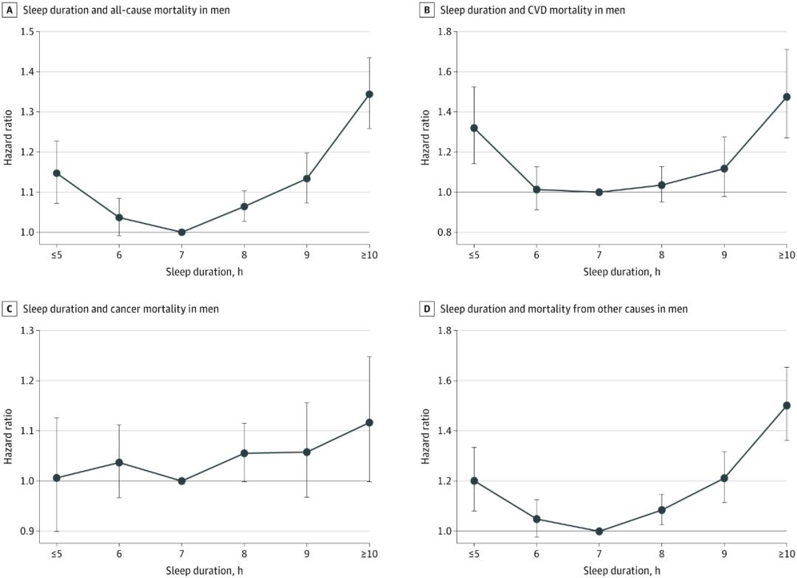
- 在女性中，與睡眠持續時間7小時相比：睡眠持續時間≥10小時與全因死亡風險增加48%相關；
- 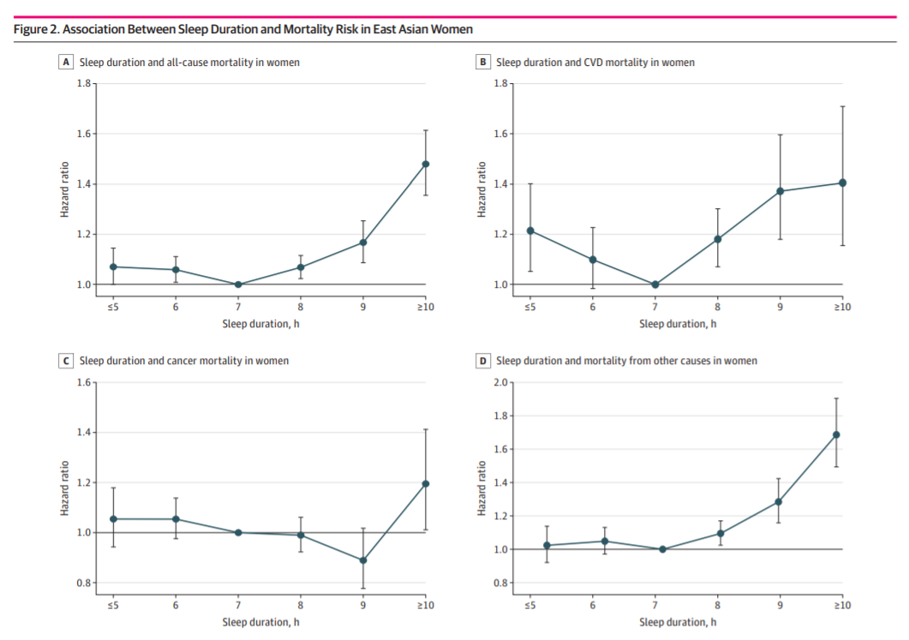
- 顛覆認知！加拿大研究發現：早睡比熬夜或許更傷身，幾點睡才好？
- 其中一個結論為，就寢時間與全因死亡率的關聯性強，過早睡覺和過晚睡覺都會影響健康，但是早睡增加的全因死亡率比晚睡增加的死亡率高，早睡增加了43%的死亡風險，而晚睡增加了15%的死亡風險。
- 這項調查研究，還存在很多侷限性，比如沒有直接證明就寢時間與死亡的關係，僅僅說明相關性，通過參與人群自我報告統計睡眠時間，數據不夠客觀
6.2.8. 久坐
- 中國居民膳食指南科學研究報告（2021年）
- 久坐和看電視時間與全因死亡、心血管疾病、癌症和2型糖尿病發病高風險相關，是獨立風險因素。久坐時間每天每增加1小時，心血管疾病發生風險增加4%，癌症增加1%，全因死亡風險增加3%。全因死亡和CVD死亡風險增加的久坐時間閾值是6~8h/d，看電視時間閾值是3~4h/d。
- 世衛組織關於身體活動和久坐行為的指南
6.3. 上下文
6.3.1. 情緒
- 悲觀情緒與更高的全因死亡率和心血管疾病死亡率有關，但樂觀情緒並不能起到保護作用
- Pessimism is associated with greater all-cause and cardiovascular mortality, but optimism is not protective
- 在1993-1995年間，一項針對50歲以上澳洲人健康的雙胞胎研究中包括了生活取向測試（LOT），其中包含樂觀和悲觀的項目。平均20年後，參與者與來自澳洲國家死亡指數的死亡資訊相匹配。在2,978名具有很多可用分數的參與者中，有1,068人死亡。生存分析測試了各種樂觀因素和悲觀情緒分數與任何原因，癌症，心血管疾病或其他已知原因的死亡率之間的關聯。年齡調整後的悲觀量表上的核心與全因和心血管疾病死亡率相關（每1個標準差單位的危險比，95％置信區間和p值1.134、1.065–1.207、8.85×10 –5和1.196、1.045–1.368、0.0093 ），但不會因癌症死亡。樂觀得分與悲觀得分之間的相關性很弱（年齡調整後的等級相關係數= − 0.176），但與總死亡率或特定原因死亡率沒有顯著相關性。反向因果關係（引起悲觀情緒的疾病）是不可能的，因為在那種情況下，心血管疾病和癌症都會導致悲觀情緒。
6.3.2. 貧富
- JAMA子刊：貧富差距真能影響壽命？這可能是真的！
- 該研究使用1994-1996年第一次收集的數據，並通過生存模型來分析淨資產和長壽之間的關聯。結果顯示，共收納5414 名參與者，平均年齡為 46.7歲，包括 2766 名女性。較高的淨資產與較低的死亡風險相關。特別是在兄弟姐妹和雙胞胎中（n = 2490），在較高的淨資產和較低的死亡率之間觀察到類似的關聯，表明擁有更多財富的兄弟姐妹或雙胞胎比擁有更少財富的兄弟姐妹/雙胞胎活得更久。
6.3.3. 體重
- JAMA子刊：減肥要趁早，才能有效降低死亡率風險
- 對體重減輕的死亡率風險評估發現，體重從肥胖減輕到超重的成年人與穩定肥胖人群相比，全因死亡率降低了54％（危險比為0.46），然而從成年初期的超重減輕到中年以前的正常體重的人群的死亡率風險並未降低（風險比為1.12）。